직업상담사-2급 (2018-04-28 기출문제)
1과목: 직업상담학
1. 다음에 대해 가장 수준이 높은 공감적 이해와 관련된 반응은?
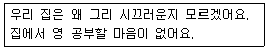
- 시끄러워도 좀 참고 하지 그러니.
- 그래, 집이 시끄러우니까 공부하는데 많이 힘들지?
- 식구들이 좀 더 조용히 해주면 공부를 더 잘 할 수 있을 것 같단 말이지.
- 공부하기 싫으니까 핑계도 많구나.
(정답률: 73%)

2. 다음 중 형태주의 상담기법과 가장 거리가 먼 것은?
- 꿈 작업
- 빈 의자 기법
- 과장하기
- 탈중심화
(정답률: 61%)
3. 정신분석상담에서 Freud가 제시한 불안의 유형에 해당하지 않는 것은?
- 현실적 불안
- 심리적 불안
- 신경증적 불안
- 도덕적 불안
(정답률: 62%)
4. 행동수정 프로그램의 절차를 바르게 나열한 것은?
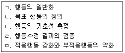
- ㄴ → ㄷ → ㅁ → ㄹ → ㄱ
- ㄴ → ㄹ → ㄷ → ㅁ → ㄱ
- ㄷ → ㄱ → ㄹ → ㅁ → ㄴ
- ㄷ → ㅁ → ㄹ → ㄴ → ㄱ
(정답률: 73%)
5. 직업상담에서 특성-요인이론에 관한 설명으로 옳은 것은?
- 대부분의 사람들은 여섯 가지 유형으로 성격 특성을 분류할 수 있다.
- 각각의 개인은 신뢰할 만하고 타당하게 측정될 수 있는 고유한 특성의 집합이다.
- 개인은 일을 통해 개인적 욕구를 성취하도록 동기화되어 있다.
- 직업적 선택은 개인의 발달적 특성이다.
(정답률: 75%)
6. 6개의 생각하는 모자(six thinking hats) 기법에서 사용하는 모자 색깔이 아닌 것은?
- 갈색
- 녹색
- 청색
- 흑색
(정답률: 84%)
7. 진로 선택과 관련된 이론으로 인생초기의 발달 과정을 중시하는 이론은?
- 인지적 정보처리이론
- 정신분석이론
- 사회학습이론
- 진로발달이론
(정답률: 66%)
8. Gottfredson은 9~13세 시기에 개인에게서 어떤 직업적 포부가 발달한다고 보았는가?
- 힘과 크기 지향
- 성역할 지향
- 사회적 가치 지향
- 고유한 자기 지향
(정답률: 55%)
9. 다음에 해당하는 Super가 제시한 흥미사정 기법은?
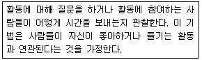
- 표현된 흥미
- 조작된 흥미
- 선호된 흥미
- 조사된 흥미
(정답률: 51%)
10. 비지시적 상담을 원칙으로 자아와 일에 대한 정보 부족 혹은 왜곡에 초점을 맞춘 직업 상담은?
- 정신분석 직업상담
- 내담자중심 직업상담
- 행동적 직업상담
- 발달적 직업상담
(정답률: 77%)
11. 다음 중 효과적인 적극적 경청을 위한 지침과 가장 거리가 먼 것은?
- 내담자의 음조를 경청한다.
- 사실 중심적으로 경청한다.
- 내담자의 표현의 불일치를 인식한다.
- 내담자가 보이는 일반화, 빠뜨린 내용, 왜곡을 경청한다.
(정답률: 62%)
12. 진로시간전망 검사 중 Cuttle이 제시한 원형검사에서 원의 크기가 나타내는 것은?
- 과거, 현재, 미래
- 방향성, 변별성, 통합성
- 시간차원에 대한 상대적 친밀감
- 시간차원의 연결 구조
(정답률: 72%)
13. Snyder 등은 직업상담을 하면서 접할 수 있는 내담자의 변명을 종류별로 구분하였다. 다음 중 변명의 종류가 다른 것은?
- 축소
- 비난
- 정당화
- 훼손
(정답률: 54%)
14. Tolbert가 제시한 집단직업상담의 요소에 대한 설명으로 옳은 것은?
- 일정：가능한 모임의 횟수를 늘려야 한다.
- 집단구성：2~4명 정도의 소규모 집단에서 구성원들 간의 상호작용과 피드백이 촉진된다.
- 과정：집단직업상담의 과정은 5가지 유형의 활동으로 이루어진다.
- 리더：집단의 리더는 상담의 목표가 달성되었는지 평가하고 구성원에게 피드백한다.
(정답률: 53%)
15. 생애진로사정의 구조에서 전형적인 하루가 갖는 정보유형은?
- 내담자의 의존적-독립적, 자발적-체계적 특성
- 일의 경험, 훈련 과정과 관심사, 오락
- 주요 장점과 장애물
- 생애주제에 대한 동의, 목표설계와 관련된 정보
(정답률: 77%)
16. 카운슬러 윤리강령을 기반으로 한 직업상담사의 기본윤리로 가장 적합한 것은?
- 상담자는 내담자가 이해하고 수용할 수 있는 한도 내에서 상담기법을 활용한다.
- 상담자는 내담자 개인이나 사회에 위험이 있다고 판단이 될지라도 개인의 정보를 보호해 줄 수 있는 포용력이 있어야 한다.
- 상담자는 내담자가 도움을 받지 못하는 상담임이 확인된 경우라도 초기 구조화한 대로 상담을 지속적으로 진행하여야 한다.
- 내담자에 대한 정보가 교육장면이나 연구장면에서 필요할 경우 내담자와 합의한 후 개인 정보를 밝혀 활용하면 된다.
(정답률: 79%)
17. 행동주의 직업상담에서 사용되는 학습촉구 기법과 가장 거리가 먼 것은?
- 강화
- 내적 금지
- 사회적 모델링과 대리학습
- 변별학습
(정답률: 69%)
18. 다음과 같은 직업상담에 대한 견해를 제시한 학자는?
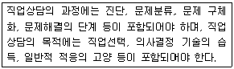
- Maola
- Gysbers
- Crites
- Krivatsy
(정답률: 76%)
19. 직업선택을 위한 마지막 과정인 선택할 직업에 대한 평가과정 중 Yost가 제시한 방법이 아닌 것은?
- 원하는 성과연습
- 확률추정연습
- 대차대조표연습
- 동기추정연습
(정답률: 54%)
20. 다음 사례에서 직면기법에 가장 가까운 반응은?
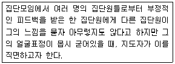
- “00씨, 지금 느낌이 어떤가요?”
- “00씨가 방금 아무렇지도 않다고 하는 말이 어쩐지 믿기지 않는군요.”
- “00씨, 내가 만일 00씨처럼 그런 지적을 받았다면 기분이 몹시 언짢겠는데요.”
- “00씨는 아무렇지도 않다고 말하지만, 지금 얼굴이 아주 굳어있고 목소리가 떨리는군요. 내적으로 지금 어떤 불편한 감정이 있는 것 같은데, 00씨의 반응이 궁금하군요.”
(정답률: 79%)
2과목: 직업심리학
21. Holland의 유형 중 기술자, 정비사, 엔지니어 등이 속하는 것은?
- 현실형
- 관습형
- 탐구형
- 사회형
(정답률: 78%)
22. 다음의 내용을 주장한 학자는?
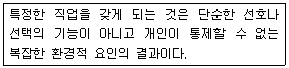
- Krumboltz
- Dawis
- Gelatt
- Peterson
(정답률: 69%)
23. 표준화 검사의 특징으로 틀린 것은?
- 검사의 실시와 채점이 객관적이다.
- 체계적 오차와 무선적 오차가 없다.
- 신뢰도와 타당도가 비교적 높다.
- 규준집단에 비교해서 피검사자의 상대적 위치를 알 수 있다.
(정답률: 70%)
24. Holland 이론의 6각형 모형에서 서로간의 거리가 가장 가깝고, 유사한 직업성격끼리 짝지은 것은?
- 사회적(S) - 진취적(E) - 예술적(A)
- 현실적(R) - 관습적(C) - 사회적(S)
- 관습적(C) - 사회적(S) - 탐구적(I)
- 탐구적(I) - 진취적(E) - 사회적(S)
(정답률: 69%)
25. 검사 결과로 제시되는 백분위 “95”에 관한 의미로 옳은 것은?
- 검사 점수를 95% 신뢰할 수 있다는 의미이다.
- 전체 문제 중에서 95%를 맞추었다는 의미이다.
- 내담자의 점수보다 높은 사람들이 전체의 95%가 된다는 의미이다.
- 내담자의 점수보다 낮은 사람들이 전체의 95%가 된다는 의미이다.
(정답률: 71%)
26. 심리검사의 문항분석에 대한 설명으로 옳은 것은?
- 문항난이도 분석은 전체의 피검사 수를 답을 맞힌 피검사의 수로 곱한 것이다.
- 문항난이도 지수는 0.00에서 1.00의 범위내에 있으며, 1.0은 모든 피검자가 답을 맞추기 쉬운 문항을 가리킨다.
- 문항의 변별도 분석은 하위점수 피검자 수에서 상위점수 피검자 수를 뺀 다음 양 집단의 피검자 수로 나눈 것이다.
- 문항변별도 분석은 하나의 검사가 단일한 구성개념이나 속성을 평가하고자 하는 목적의 달성정도를 검토할 때 사용한다.
(정답률: 60%)
27. 자료취급-대인관계-사물조각(DPT) 부호 중 사물조작에 해당하지 않는 것은?
- 정밀작업(precision working)
- 관리(tending)
- 단순취급(handling)
- 대조(comparing)
(정답률: 55%)
28. 직업상담사가 직업을 전환하고자 하는 내담자에게 우선적으로 탐색해야 할 것은?
- 변화에 대한 인지능력
- 새로운 직업에 대한 성공 기대수준
- 직업상담에 대한 기대
- 기존 직업에 대한 애착수준
(정답률: 73%)
29. 내담자의 직무능력을 언어능력과 동작성 능력으로 구분하여 분석하는 대표적인 검사는?
- 비문자형 종합검사(NATB)
- 웩슬러 성인용 지능검사(WAIS-Ⅲ)
- FQ(Finger-Function Quotient)검사
- 수정베타 검사법(제2판)
(정답률: 75%)
30. 스트레스와 직무수행 간의 관계에 관한 설명으로 옳은 것은?
- 스트레스가 많을수록 직무수행이 떨어지는 일차함수 관계이다.
- 어느 수준까지만 스트레스가 많을수록 직무수행이 떨어진다.
- 일정시점 이후에 스트레스 수준이 증가하면 수행실적은 오히려 감소하는 역U형 관계이다.
- 스트레스와 직무수행은 관계가 없다.
(정답률: 76%)
31. 검사실시에 영향을 미치는 외적 변수들을 최소화하는 것이 목표인 것은?
- 타당화
- 표준화
- 신뢰화
- 규준화
(정답률: 55%)
32. 다음 중 직업에 관련된 흥미를 측정하는 직업흥미검사가 아닌 것은?
- Strong Interest Inventory
- Vocational Preference Inventory
- Kuder Interest Inventory
- California Psychological Inventory
(정답률: 73%)
33. 조직 감축에서 살아남은 구성원들이 조직에 대해 보이는 전형적인 반응은?
- 살아남은 구성원들은 조직에 대해 높은 신뢰감을 가지고 있다.
- 더 많은 일을 해야 하고, 종종 불이익도 감수한다.
- 살아남은 구성원들은 다른 직무나 낮은 수준의 직무로 이동하는 것을 거부한다.
- 조직 감축에서 살아남은데 만족하며 조직 몰입을 더욱 많이 한다.
(정답률: 76%)
34. 직무스트레스에 관한 설명으로 옳은 것은?
- 17-OHCS라는 당류부신피질 호르몬은 스트레스의 생리적 지표로서 매우 중요하게 사용된다.
- B형 행동유형이 A형 행동유형보다 높은 스트레스 수준을 유지한다.
- Yerkes와 Dodson의 U자형 가설은 스트레스 수준이 낮으면 작업능률이 높아진다는 가설이다.
- 일반적응증후(GAS)는 저항단계, 경계단계, 소진단계 순으로 진행되면서 사람에게 나쁜 결과를 가져다준다.
(정답률: 70%)
35. 개인의 진로발달과정에 사회나 환경의 영향을 상대적으로 많이 고려하는 이론은?
- Parsons의 특성요인이론(trait-factor theory)
- 의사결정이론(decision making theory)
- Roe의 욕구이론(need theory)
- Super의 발달이론(developmental theory)
(정답률: 49%)
36. Super가 제시한 진로발달 단계를 순서대로 바르게 나열한 것은?
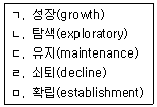
- ㄴ → ㄱ → ㅁ → ㄷ → ㄹ
- ㄱ → ㄴ → ㄷ → ㅁ → ㄹ
- ㄴ → ㅁ → ㄱ → ㄷ → ㄹ
- ㄱ → ㄴ → ㅁ → ㄷ → ㄹ
(정답률: 69%)
37. 경력개발 프로그램에서 종업원 평가에 사용하는 방법이 아닌 것은?
- 경력 워크숍
- 평가기관
- 심리검사
- 조기발탁제
(정답률: 42%)
38. 직무분석의 자료수집과 분석단계에 해당하지 않는 것은?
- 직무분석의 목적에 따라 어떤 정보를 수집할 것인지를 분명히 한다.
- 직무분석 목적과 관련된 직무요인의 특성을 찾는다.
- 직무분석에서 수집할 정보의 종류와 범위를 명시한다.
- 수집된 정보가 타당한 것인지 현직자나 상사들이 재검토한다.
(정답률: 30%)
39. 진로발달이론 중 인지적 정보처리관점에 해당하는 것은?
- 개인에게 학습기회를 제공함으로서 개인의 처리능력을 발전시킨다.
- 개인의 삶은 외부환경요인, 개인과 신체적 속성 및 외형적 행동 간의 상호작용이다.
- 인간의 기능은 개인의 가치에 의해 상당부분 영향을 받는다.
- 인간은 특성과 환경, 성격 등의 요인에 의하여 진로를 발전시킨다.
(정답률: 51%)
40. 개인의 욕구와 능력을 환경의 요구사항과 관련시켜 진로행동을 설명하고, 개인과 환경간의 상호작용을 통한 욕구충족을 강조하는 이론은?
- 욕구이론
- 특성요인이론
- 사회학습이론
- 직업적응이론
(정답률: 36%)
3과목: 직업정보론
41. 고용정보의 가공·분석 시 유의사항으로 틀린 것은?
- 변화 동향에 유의할 것
- 정보의 가공 및 분석목적을 명확히 할 것
- 숫자로 표현할 수 없는 정보는 배제할 것
- 다른 통계와의 관련성 및 여러 측면을 고려할 것
(정답률: 77%)
42. 한국표준산업분류의 분류구조 및 부호체계에 대한 설명으로 틀린 것은?
- 분류구조는 대분류(알파벳 문자 사용), 중분류(2자리 숫자 사용), 소분류(3자리 숫자 사용), 세분류(4자리 숫자 사용)의 4단계로 구성된다.
- 부호처리를 할 경우에는 아라비아 숫자만을 사용토록 했다.
- 권고된 국제분류 ISIC Rev.4를 기본체계로 하였으나, 국내실정을 고려하여 국제분류의 각 단계 항목을 분할, 통합 또는 재그룹화하여 독자적으로 분류 항목과 분류 부호를 설정하였다.
- 중분류의 번호는 01부터 99까지 부여하였으며, 대분류별 중분류 추가여지를 남겨놓기 위하여 대분류 사이에 번호 여백을 두었다.
(정답률: 55%)
43. 다음 중 직업별 임금관련 정보를 제공하지 않는 것은?
- 한국직업전망
- Job Map
- 한국직업사전
- 한국직업정보시스템
(정답률: 61%)
44. 한국고용직업분류(KECO)에 대한 설명으로 틀린 것은?(관련규정 개정전 문제로 기존 정답은 1번 이었으면 여기서는 1번을 누르면 정답 처리 됩니다. 자세한 내용은 해설을 참고하세요.)
- 10진법 중심의 분류이다.
- 직능유형(skill type) 중심이다.
- 대분류보다는 중분류 중심체계이다.
- 직업분류의 기본 원칙인 포괄성과 배타성을 고려하여 분류하였다.
(정답률: 61%)
45. 국가직무능력표준(NCS)에 대한 설명으로 틀린 것은?
- 국가직무능력표준은 산업현장에서 직무를 수행하기 위해 요구되는 지식, 기술, 태도 등의 내용을 국가가 체계화한 것이다.
- 국가직무능력표준 분류는 직무의 유형(Type)을 중심으로 단계적으로 구성하였다.
- 국가직무능력표준을 활용하여 교육·훈련 프로그램 및 자격종목을 설계할 수 있다.
- 국가직무능력표준의 수준체계는 1수준~5수준의 5단계로 구성된다.
(정답률: 66%)
46. 다음 중 적극적인 노동시장 정책으로 볼 수 없는 것은?
- 실업급여 제공
- 실직자 취업상담
- 실직자 재취직훈련
- 일자리 창출
(정답률: 73%)
47. 일자리 안정자금에 대한 설명으로 틀린 것은?
- 최저임금 인상에 따른 소상공인 및 영세중소기업의 경영부담을 완화하고 노동자의 고용 불안을 해소하기 위한 지원사업이다.
- 일자리 안정자금의 지급방식은 직접 지급 또는 사회보험료 대납 중 선택할 수 있다.
- 노동자를 30인 미만을 고용하는 사업주에 대해 지원하나 공동주택 경비·청소원 고용사 업주에 대해서는 30인 이상인 경우에도 지원한다.
- 고용보험 가입대상자는 고용보험에 가입하여야 지원하고, 법률상 고용보험 적용대상이 아닌 경우에는 지원에서 제외된다.
(정답률: 54%)
48. 직업정보에 대한 설명으로 틀린 것은?
- 현재 고려중인 직업의 선택의 수를 줄이기 위해서 사용할 수 있다.
- 직업정보를 제공하는 인쇄매체는 직업체험보다 학습자 참여도가 수동적이다.
- 직업정보를 수집할 때는 항상 최신의 자료인가 확인한다.
- 직업정보 수집을 목적으로 할 때 직업체험은 인쇄매체보다 접근성이 우수하다.
(정답률: 68%)
49. 서울시 마포구 주민 중 일부를 사전에 조사대상으로 선정하고, 이들을 대상으로 6개월 혹은 1년 단위로 고용현황 등 직업정보를 반복하여 수집하는 조사방법은?
- 코호트조사
- 횡단조사
- 패널조사
- 사례조사
(정답률: 62%)
50. 워크넷에서 제공하는 채용정보 중 기업형태별 검색에 해당하지 않는 것은?
- 대기업
- 가족친화인증기업
- 외국계기업
- 금융권기업
(정답률: 66%)
51. 워크넷 Job map에서 얻을 수 없는 정보는?
- 산업별 평균근속연수
- 직업별 여성비율
- 산업별 종사자수
- 직업별 청년 구직자 참여 비율
(정답률: 53%)
52. 낮에는 제조업체에서 금형공으로 일하고, 밤에는 대리운전을 하는 경우, 한국표준직업 분류에서 직업을 결정하는 일반적 원칙이 아닌 것은?
- 주된 직무 우선 원칙
- 취업시간 우선의 원칙
- 수입 우선의 원칙
- 조사 시 최근의 직업 원칙
(정답률: 57%)
53. 한국표준산업분류의 적용원칙으로 틀린 것은?
- 생산단위는 산출물뿐만 아니라 투입물과 생산공정 등을 함께 고려하여 그들의 활동을 가장 정확하게 설명된 항목에 분류해야 한다.
- 복합적인 활동단위는 우선적으로 세세분류를 정확히 결정하고, 순차적으로 세·소·중·대분류 단계 항목을 결정하여야 한다.
- 산업활동이 결합되어 있는 경우에는 그 활동단위의 주된 활동에 따라서 분류하여야 한다.
- 수수료 또는 계약에 의하여 활동을 수행하는 단위는 동일한 산업활동을 자기계정과 자기 책임 하에서 생산하는 단위와 같은 항목에 분류하여야 한다.
(정답률: 73%)
54. 다음 국가기술자격 검정의 기준은 어느 등급에 해당하는가?
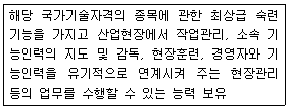
- 기술사
- 기능장
- 기사
- 산업기사
(정답률: 62%)
55. 국가기술자격종목과 그 직무분야의 연결이 틀린 것은?(관련 규정 개정전 문제로 여기서는 기존 정답인 4번을 누르면 정답 처리됩니다. 자세한 내용은 해설을 참고하세요.)
- 직업상담사 2급-사회복지·종교
- 소비자전문상담사 2급-경영·회계·사무
- 세탁기능사-경비·청소
- 컨벤션기획사 2급-이용·숙박·여행·오락·스포츠
(정답률: 67%)
56. 공공직업정보의 일반적인 특성에 대한 설명으로 틀린 것은?
- 전 산업 및 직종을 대상으로 지속적으로 조사·분석한다.
- 보편적 항목으로 이루어진 기초정보가 많다.
- 관련 직업 간 비교가 용이하다.
- 단시간에 조사하고 특정 목적에 맞게 직종을 제한적으로 선택한다.
(정답률: 76%)
57. 다음은 직무분석용어 중 무엇에 관한 설명인가?
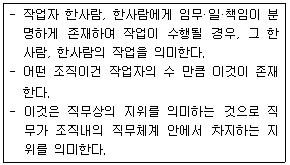
- 과업(Task)
- 직위(Position)
- 동작(Motion)
- 직업(Occupation)
(정답률: 70%)
58. 한국표준산업분류상 단일 장소에서 이루어지는 단일 산업활동의 통계단위는?
- 기업집단 단위
- 사업체 단위
- 활동유형 단위
- 지역 단위
(정답률: 59%)
59. 한국직업사전의 부가직업정보 중 '수준 4'에 해당하는 숙련기간은?
- 시범 후 30일 이하
- 3개월 초과 ~ 6개월 이하
- 1년 초과 ~ 2년 이하
- 4년 초과 ~ 10년 이하
(정답률: 49%)
60. 직업상담사 제공하는 직업정보의 기능과 역할에 대한 설명으로 틀린 것은?
- 여러 가지 직업적 대안들의 정보를 제공한다.
- 내담자의 흥미, 적성, 가치 등을 파악하는 것이 직업정보의 주기능이다.
- 경험이 부족한 내담자에게 다양한 직업들을 간접적으로 접할 기회를 제공한다.
- 내담자가 자신의 선택이 현실에 비추어 부적당한 선택이었는지를 점검하고 재조정해 볼 수 있는 기초를 제공한다.
(정답률: 58%)
4과목: 노동시장론
61. A국의 생산가능인구는 500만 명, 취업자 수는 285만 명, 실업률이 5%일 때 A국의 경제활동참가율은?
- 48%
- 50%
- 57%
- 60%
(정답률: 45%)
62. 경쟁노동시장 경제모형의 기본 가정과 가장 거리가 먼 것은?
- 내부노동시장은 존재하지 않는다.
- 노동자와 고용주는 완전정보를 갖는다.
- 노동자는 능력이나 숙련도의 차이가 있다.
- 노동자 개인이나 개별 고용주는 시장임금에 아무런 영향을 행사할 수 없다.
(정답률: 42%)
63. 실업정책을 크게 고용안정정책, 고용창출정책, 사회안전망 정책으로 구분할 때 사회안전망 정책에 해당하는 것은?
- 실업급여
- 취업알선 등 고용서비스
- 창업을 위한 인프라 구축
- 직업훈련의 효율성 제고
(정답률: 62%)
64. 다음 중 노동조합의 경제적 효과 중 파급효과에 대한 설명으로 틀린 것은?
- 파급효과는 노동조합이 조직됨으로써 노동조합 조직부문에서의 상대적 노동수요가 감소하고 그 결과 일자리를 잃은 노동자들이 비조직부문의 임금을 하락시키는 효과이다.
- 파급효과는 노동조합의 잠재적인 조직위협에 의해서 보조직부문의 노동자의 임금이 인상되는 효과이다.
- 파급효과가 매우 강한 경우에는 노동조합이 이중노동시장을 형성시키게 한다.
- 파급효과가 강한 경우 조직부문의 임금인상이 비조합원을 저임금의 불안정한 직무로 몰아내는 간접효과를 가진다.
(정답률: 54%)
65. 임금이 10% 상승할 때 노동수요량이 20% 하락했다면 노동수요의 탄력성은?
- 0.5
- 1.0
- 1.5
- 2.0
(정답률: 58%)
66. 다음 중 고정적 임금의 구성으로 가장 적합한 것은?
- 기본급＋성과급
- 기본급＋초과급여＋고정적 상여금
- 기본급＋제수당＋고정적 상여금
- 기본급＋초과급여＋성과급
(정답률: 63%)
67. 던롭(Dunlop)이 노사관계를 규제하는 여건 혹은 환경으로 지적한 사항이 아닌 것은?
- 시민의식
- 기술적 특성
- 시장 또는 예산제약
- 각 주체의 세력관계
(정답률: 63%)
68. 파업의 경제적 비용과 기능에 관한 설명으로 옳은 것은?
- 사적비용과 사회적 비용은 동일하다.
- 사용자의 사적비용은 직접적인 생산중단에서 오는 이윤의 순감소분과 같다.
- 사적비용이란 경제의 한 부문에서 발생한 파업으로 인한 타 부문에서의 생산 및 소비의 감소를 의미한다.
- 서비스 산업부문은 파업에 따른 사회적 비용이 상대적으로 큰 분야이다.
(정답률: 67%)
69. 다음 중 시장균형임금보다 임금수준이 높게 유지되는 경우에 해당되지 않는 것은?
- 인력의 부족
- 노동조합의 존재
- 최저임금제의 시행
- 효율성 임금 정책 도입
(정답률: 32%)
70. 실업률을 하락시키는 변화로 옳은 것을 모두 고른 것은? (단, 취업자 수 및 실업자 수는 0보다 크다.)
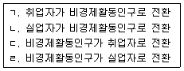
- ㄱ, ㄴ
- ㄱ, ㄹ
- ㄴ, ㄷ
- ㄷ, ㄹ
(정답률: 58%)
71. 후방굴절형 노동공급곡선에 대한 설명으로 옳은 것은?
- 임금이 일정 수준 이상으로 오르면 임금이 오를수록 노동공급이 감소하게 된다.
- 임금변화의 대체효과가 소득효과보다 클 때 임금과 노동시간 사이에 부의 관계가 나타나는 것을 말한다.
- 노동공급의 변화율을 노동가격의 변화율로 나눈 값이 점차 감소하는 현상을 그래프로 나타낸 것을 말한다.
- 인구가 일정 규모 이상이 되면 임금이 오를수록 노동 공급이 감소하는 것을 그래프로 나타낸 것을 말한다.
(정답률: 52%)
72. 기혼여성의 경제활동참가율을 높이는 요인과 가장 거리가 먼 것은?
- 가사노동 대체비용의 하락
- 남편의 소득 증가
- 출산율 저하
- 시간제근무 기회 확대
(정답률: 73%)
73. 디지털 카메라의 등장으로 기존의 필름산업이 쇠퇴하여 필름산업 종사자들이 일자리를 잃을 때 발생하는 실업은?
- 구조적 실업
- 계절적 실업
- 경기적 실업
- 마찰적 실업
(정답률: 70%)
74. 다음 중 헤도닉 임금이론의 가정으로 틀린 것은?
- 직장의 다른 특성은 동일하며 산업재해의 위험도도 동일하다.
- 노동자는 효용을 극대화하며 노동자간에는 산업안전에 관한 선호의 차이가 존재한다.
- 기업은 좋은 노동조건을 위해 산업안전에 투자해야 한다.
- 노동자는 정확한 직업정보를 갖고 있으며 직업 간에 자유롭게 이동할 수 있다.
(정답률: 59%)
75. 다음 중 산업민주화 정도가 가장 높은 형태의 기업은?
- 노동자 자주관리 기업
- 노동자 경영참여 기업
- 전문경영인 경영 기업
- 중앙집집권적 기업
(정답률: 58%)
76. 유보임금(reservation wage)에 관한 옳은 설명으로만 짝지어진 것은?
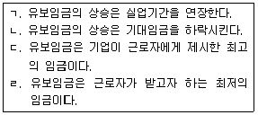
- ㄱ, ㄷ
- ㄴ, ㄷ
- ㄴ, ㄹ
- ㄱ, ㄹ
(정답률: 59%)
77. 산업별 노동조합에 대응할 만한 사용자 단체가 없거나, 이러한 사용자 단체가 있더라도 각 기업별로 특수한 사정이 있을 경우 산업별 노동조합이 개별기업과 개별적으로 교섭하는 단체교섭의 유형은?
- 대각선교섭
- 집단교섭
- 통일교섭
- 기업별교섭
(정답률: 67%)
78. 내부노동시장에 대한 설명으로 틀린 것은?
- 근로자의 단기적 생산성과 임금이 연관된다.
- 기업비용부담으로 기업차원의 교육훈련이 체계적으로 실시된다.
- 내부 승진이 많다.
- 장기적 고용관계로 직장안정성이 높다.
(정답률: 61%)
79. 근로자의 직무수행능력을 기준으로 하여 각 근로자의 임금을 결정하는 임금체계는?
- 직무급
- 직능급
- 부가급
- 성과배분급
(정답률: 61%)
80. 노동수요를 결정하는 요인과 가장 거리가 먼 것은?
- 개인의 여가에 대한 태도
- 시장임금의 크기
- 자본서비스의 가격
- 노동을 이용하여 생산된 상품에 대한 소비자의 수요
(정답률: 57%)
5과목: 노동관계법규
81. 근로기준법상 근로계약에 관한 설명으로 틀린 것은?
- 단시간근로자의 근로조건은 그 사업장의 같은 종류의 업무에 종사하는 통상 근로자의 근로시간을 기준으로 산정한 비율에 따라 결정되어야 한다.
- 사용자는 근로계약 불이행에 대한 위약금 또는 손해배상액을 예정하는 계약을 체결하여야 한다.
- 사용자는 전차금(前借金)이나 그 밖에 근로할 것을 조건으로 하는 전대(前貸)채권과 임금을 상계하지 못한다.
- 사용자는 근로계약에 덧붙여 강제 저축 또는 저축금의 관리를 규정하는 계약을 체결하지 못한다.
(정답률: 62%)
82. 직업안정법령상 직업안정기관의 장의 직업소개에 대한 설명으로 틀린 것은?
- 구직자에게는 그 능력에 알맞은 직업을 소개하도록 노력하여야 한다.
- 구인자에게는 구인조건에 적합한 구직자를 소개하도록 노력하여야 한다.
- 가능하면 구직자가 통근할 수 있는 지역에서 직업을 소개하도록 노력하여야 한다.
- 구인자와 구직자의 이익이 충돌할 경우에는 구직자의 이익을 우선할 수 있도록 노력하여야 한다.
(정답률: 69%)
83. 남녀고용평등과 일·가정 양립 지원에 관한 법률이 규정하고 있는 내용이 아닌 것은?
- 육아휴직급여
- 출산전후 휴가에 대한 지원
- 배우자 출산휴가
- 직장어린이집 설치 및 지원
(정답률: 44%)
84. 근로자직업능력 개발법령상 직업에 필요한 기초적 직무수행능력을 가지고 있는 사람에게 더 높은 직무수행능력을 습득시키거나 기술발전에 맞추어 지식·기능을 보충하게 하기 위하여 실시하는 직업능력개발훈련은?
- 양성훈련
- 향상훈련
- 전직훈련
- 집체훈련
(정답률: 70%)
85. 고용보험법상 자영업자인 피보험자에게 지급될 수 있는 급여를 모두 고른 것은?
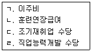
- ㄱ, ㄹ
- ㄴ, ㄷ
- ㄴ, ㄷ, ㄹ
- ㄱ, ㄴ, ㄷ, ㄹ
(정답률: 54%)
86. 근로자퇴직급여 보장법에 관한 설명으로 틀린 것은?
- 이 법은 상시 5명 미만의 근로자를 사용하는 사업 또는 사업장에는 적용하지 아니한다.
- 퇴직금 제도를 설정하려는 사용자는 계속근로기간 1년에 대하여 30일분 이상의 평균임금을 퇴직금으로 퇴직 근로자에게 지급할 수 있는 제도를 설정하여야 한다.
- 퇴직금을 받을 권리는 3년간 행사하지 아니하면 시효로 인하여 소멸한다.
- 확정급여형퇴직연금제도란 근로자가 받을 급여의 수준이 사전에 결정되어 있는 퇴직연금제도를 말한다.
(정답률: 60%)
87. 직업안정법상 고용노동부장관의 허가를 받아야 하는 것은?
- 근로자공급사업
- 유료직업소개사업
- 직업정보제공사업
- 국외 취업자의 모집
(정답률: 47%)
88. 남녀고용평등과 일·가정 양립 지원에 관한 법령상 육아휴직에 관한 설명으로 틀린 것은?(관련 규정 개정전 문제로 여기서는 기존 정답인 3번을 누르면 정답 처리됩니다. 자세한 내용은 해설을 참고하세요.)
- 근로자가 육아휴직 종료 예정일을 연기하려는 경우에는 한번만 연기할 수 있다.
- 사업주는 육아휴직을 마친 후에는 휴직 전과 같은 업무 또는 같은 수준의 임금을 지급하는 직무에 복귀시켜야 한다.
- 사업주는 같은 영유아에 대하여 배우자가 육아휴직을 하고 있는 근로자에 대해 육아휴직을 허용해야 한다.
- 사업주는 육아휴직을 이유로 해고나 그 밖의 불리한 처우를 하여서는 아니 되며, 원칙적으로 육아휴직 기간에는 그 근로자를 해고하지 못한다.
(정답률: 71%)
89. 고용보험법상 심사의 청구에 관한 설명으로 틀린 것은?
- 심사의 청구는 시효중단에 관하여 재판상의 청구로 본다.
- 심사의 청구는 원처분등을 한 직업안정기관을 거쳐 고용보험심사관에게 하여야 한다.
- 결정은 심사청구인 및 직업안정기관의 장에게 결정서의 정본을 보낸 날부터 효력이 발생한다.
- 고용보험심사관은 심사청구인의 신청에 의하여 원처분등의 집행을 정지시킬 수 있다.
(정답률: 38%)
90. 다음 ( )에 알맞은 것은?
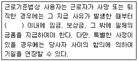
- 14일
- 30일
- 60일
- 90일
(정답률: 61%)
91. 파견근로자보호 등에 관한 법령에 대한 설명으로 틀린 것은?
- 근로자파견사업의 허가의 유효기간은 3년으로 한다.
- 파견사업주는 그가 고용한 근로자 중 파견근로자로 고용하지 아니한 자를 근로자파견의 대상으로 하려는 경우에는 고용노동부장관의 승인을 받아야 한다.
- 파견사업주는 쟁의행위 중인 사업장에 그 쟁의행위로 중단된 업무의 수행을 위하여 근로자를 파견하여서는 아니 된다.
- 파견사업주는 근로자파견을 할 경우에는 파견근로자의 성명·성별·연령·학력·자격 기타 직업능력에 관한 사항을 사용사업주에게 통지하여야 한다.
(정답률: 56%)
92. 근로자직업능력 개발법령상 공공직업훈련시설을 설치할 수 있는 공공단체에 해당하지않는 것은?
- 한국산업인력공단
- 한국장애인고용공단
- 근로복지공단
- 한국직업능력개발원
(정답률: 47%)
93. 근로자직업능력 개발법상 직업능력개발훈련이 중요시되어야 할 대상에 해당하지 않는 것은?
- ｢국민기초생활 보장법｣에 따른 수급권자
- ｢제대군인지원에 관한 법률｣에 따른 전역예정자
- 제조업의 연구직에 종사하는 근로자
- 일시적 사업에 고용된 근로자
(정답률: 68%)
94. 다음 ( )에 알맞은 것은?
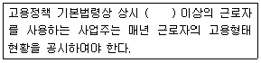
- 50명
- 100명
- 200명
- 300명
(정답률: 75%)
95. 헌법 제32조에서 명시된 내용이 아닌 것은?
- 국가는 근로의 의무의 내용과 조건을 민주주의원칙에 따라 법률로 정한다.
- 장애인의 근로는 특별한 보호를 받는다.
- 국가는 법률이 정하는 바에 의하여 최저임금제를 시행하여야 한다.
- 근로조건의 기준은 인간의 존엄성을 보장하도록 법률로 정한다.
(정답률: 61%)
96. 우리나라 헌법에 규정된 노동3권이 아닌 것은?
- 단체요구권
- 단체행동권
- 단체교섭권
- 단결권
(정답률: 74%)
97. 고용정책 기본법상 근로자의 정의로 옳은 것은?
- 직업의 종류를 불문하고 임금, 급료 기타 이에 준하는 수입에 의하여 생활하는 사람
- 직업의 종류와 관계없이 임금을 목적으로 사업이나 사업장에 근로를 제공하는 사람
- 사업주에게 고용된 사람과 취업할 의사를 가진 사람
- 사업주에게 고용된 사람과 취업 또는 창업할 의사를 가진 사람
(정답률: 57%)
98. 고용상 연령차별금지 및 고령자고용촉진에 관한 법령상 제조업, 운수업, 부동산 및 임대업을 제외한 산업의 고령자 기준고용률은?
- 그 사업장의 상시근로자수의 100분의 1
- 그 사업장의 상시근로자수의 100분의 2
- 그 사업장의 상시근로자수의 100분의 3
- 그 사업장의 상시근로자수의 100분의 6
(정답률: 58%)
99. 남녀고용평등과 일·가정 양립 지원에 관한 법률상 차별에 해당하지 않는 것은?
- 사업주가 근로자에게 성별, 혼인, 가족 안에서의 지위, 임신 또는 출산 등의 사유로 합리적인 이유 없이 채용 또는 근로의 조건을 다르게 하거나 그 밖의 불리한 조치를 하는 경우
- 사업주가 채용조건이나 근로조건은 동일하게 적용하더라도 그 조건을 충족할 수 있는 남성 또는 여성이 다른 한 성(性)에 비하여 현저히 적고 그에 따라 특정 성에게 불리한 결과를 초래하며 그 조건이 정당한 것임을 증명할 수 없는 경우
- 사업주가 임금 외에 근로자의 생활을 보조하기 위한 금품의 지급 또는 자금의 융자를 특정 성의 직원에게만 하는 경우
- 현존하는 남녀 간의 고용차별을 없애거나 고용평등을 촉진하기 위하여 잠정적으로 특정성을 우대하는 조치를 하는 경우
(정답률: 63%)
100. 근로기준법령상 취직인허증에 대한 설명으로 틀린 것은?
- 취직인허증을 받으려는 자가 의무교육 대상자로서 재학 중인 경우에는 학교장이 고용노동부장관에게 신청하여야 한다.
- 고용노동부장관은 거짓이나 그 밖의 부정한 방법으로 취직인허증을 발급받은 자에게는 그 인허를 취소하여야 한다.
- 예술공연 참가를 위한 경우에는 13세 미만인 자도 취직인허증을 받을 수 있다.
- 취직인허증은 본인의 신청에 따라 의무교육에 지장이 없는 경우에는 직종을 지정하여서만 발행할 수 있다.
(정답률: 55%)